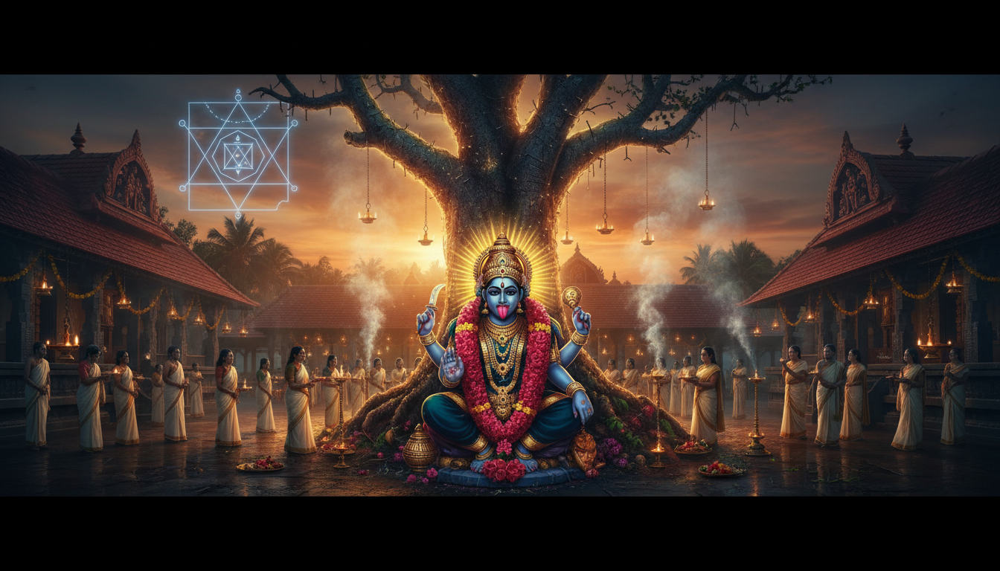

1. Introduction: Seeking Solace in the Divine
In an era dominated by the relentless pace of modern life, many seekers find themselves burdened by intangible weights: a persistent cloud of negativity, unexplainable mental unrest, or the heavy, draining influence of "evil eye" afflictions. When conventional remedies fail to restore inner quiet, the ancient Vedic tradition directs us toward Siddha Peethas—shrines of proven spiritual power where the atmosphere itself has been charged by centuries of intense devotion and ritual precision.

These are not merely places of worship; they are spiritual hospitals. For those seeking release from psychic disturbances and karmic blockages, two destinations stand as the ultimate sanctuaries of healing: the Chottanikkara Bhagavathy Temple in the lush landscapes of Kerala and the Sri Maha Pratyangira Devi Temple at Ayyavadi in Tamil Nadu. These time-tested centers offer specialized remedies that transcend simple prayer, utilizing the profound "Science of the Soul" to reclaim the devotee's mental and spiritual sovereignty.
2. Chottanikkara: The Triple-Form Goddess and the Power of Ammenarayana
In the suburb of Kochi lies Chottanikkara, a site defined by a "swayambhu" (self-revealed) idol and a legend that captures the very essence of transformation. Historical lore tells of Kannappan, a fierce tribesman who once intended to sacrifice a young calf to the Goddess. His daughter, out of deep compassion, begged for the animal's life. When she died mysteriously shortly thereafter, a priest revealed that the Goddess had punished Kannappan’s cruelty. In the place where the calf once stood, a divine stone idol appeared—not of a single deity, but a dual manifestation of Lord Vishnu and Goddess Lakshmi. This is why, uniquely among Devi temples, the presiding deity is hailed as Ammenarayana or Lakshminarayana.
The spiritual seeker at Chottanikkara witnesses a mesmerizing sensory cycle as the Goddess alters her manifestation and the color of her silk garments throughout the day:
- Morning (Mookambika): She is worshipped as Goddess Saraswati, draped in the pristine white of wisdom and creativity.
- Noon: She assumes the form of Goddess Lakshmi, adorned in vibrant crimson to signify prosperity and preservation.
- Evening: She manifests as the powerful Goddess Durga (Mahakali), decked in a deep, regal blue to command the destruction of negativity.
3. Rituals of Release: Guruthi Pooja and the Nailing Ceremony
While the main temple offers serene Bhajanam—a period of prayer and meditation within the temple walls—the nearby Keezhkavu shrine provides a more visceral experience. Dedicated to Bhadrakali, the fierce form of the Mother discovered in the Yakshikulam pond by the saint Vilwamangalam Swamiyar, this shrine is the epicenter of spiritual exorcism.
The Sunset Guruthi Pooja
As the sun dips below the horizon, the Guruthi Pooja begins. This intense ritual is specifically structured to eradicate deep-seated curses, evil eyes, and astrological doshas. The rhythmic chanting of Vedic mantras and the preparation of the ritualistic "Guruthi" (a mixture representing life force) purify the devotee’s aura, restoring a harmonious balance with cosmic energies.
The Nailing Ritual at the Pala Tree
For those afflicted by "evil spirits" or severe mental disturbances, the Pala tree near the Keezhkavu shrine provides a final point of release. In a profound act of faith, devotees engage in the Nailing Ritual, hammering long iron nails into the ancient bark. The rhythmic hammering—sometimes using their own foreheads to drive the metal—symbolizes the "pinning down" and permanent disabling of the negative influences haunting their lives.
Thulabharam Offerings
Reflecting Kerala's rich agrarian history, devotees participate in Thulabharam, where they are weighed against offerings like sugar, coconuts, or bananas. This act of surrendering one's physical weight in material goods serves as a gesture of deep gratitude and humility.
4. The Lion-Faced Protectress: Sri Maha Pratyangira Devi of Ayyavadi
Deep within the Kumbakonam temple belt at Ayyavadi—historically known as Aivar Padi, the place where the five Pandavas once sought refuge—stands a shrine dedicated to the ultimate shield against hostility: Sri Maha Pratyangira Devi.
Manifesting as Narasimhini, the Goddess possesses a terrifying yet protective iconography: a massive male lion’s face, a dark complexion as deep as rain-laden clouds, disheveled hair that roars like a raging fire, and a protruding tongue. She is the embodiment of the Atharva Veda, the source of protective magical spells.
The temple is the legendary site of the Nikumbhila Yajna. In the Ramayana, Indrajita attempted this yaga to achieve invincibility; however, the ritual was interrupted by Hanuman to ensure the triumph of Dharma. Today, the most potent ritual remains the Amavasya (New Moon) Homam. The air becomes thick with the pungent, acrid scent of red chillies being offered into the sacred fire by the thousands. This intense imagery and the heat of the fire are believed to consume black magic, internal enemies, and the paralyzing grip of fear.
5. The Science of the Soul: Understanding the Ritual Procedure
Vedic rituals are not arbitrary; they are meticulously structured sequences designed to channel divine energy through specific material and vocal frequencies.
- Selection of Auspicious Timings: Aligning the ceremony with the Hindu calendar and specific planetary positions to maximize efficacy.
- Preparation and Cleansing: The ritual space is purified with Panchagavya (five bovine products) and adorned with Darbh grass. A Kalasha (sacred pot) is decorated with turmeric, rice, and coconut to serve as a temporary vessel for the deity.
- Invocation (Sankalp and Gauri Ganesh Pujan): The devotee makes a formal resolution (Sankalp), followed by Gauri Ganesh Pujan to ensure the ritual proceeds without obstacles.
- The Core Ritual (Havan and Mantras): Offerings of ghee and herbs are cast into the fire while priests chant specific Vedic mantras, creating a resonance that vibrates through the physical and astral bodies.
- Culmination (Aarti and Prasad): The ceremony ends with the Aarti (light offering) and the distribution of Prasad, which allows the devotee to internalize the divine blessing.
6. Personal Alignment: Finding Your Compatible Deity via Jyotisha
In Vedic Astrology (Jyotisha), your Amatyakaraka (AMK)—the planet with the second-highest degree in your birth chart—serves as your advisor and guide. Aligning your spiritual practice with the deity that governs your AMK’s element (Pancha Tattva) ensures a smoother path to liberation.
A high-impact secret of the tantric tradition involves the Nivṛttikalā Bīja (kṣam̐). Residing at the "lowest limit of creation," this seed has the unique power to reverse one's direction, taking a soul from the depths of worldly suffering to the highest point of spiritual realization.
| Planet (AMK) | Associated Tattva | Presiding Tantrik Deity |
|---|---|---|
| Sun | Fire (Tejas) | Matangi / Surya Devi |
| Moon | Water (Apas) | Lalita Tripurasundari |
| Mars | Fire (Tejas) | Pratyangira / Durga |
| Mercury | Earth (Prithvi) | Tara / Vak Devi |
| Jupiter | Ether (Akasha) | Matangi / Dattatreya |
| Venus | Water (Jala) | Bhuvaneshwari / Kamalatmika |
| Saturn | Air (Vayu) | Kali / Dhumavati |
7. Conclusion: Actionable Takeaways for the Spiritual Seeker
The spiritual negativity we encounter is often a misalignment of energy that can be corrected through these traditional remedies. Whether you stand amidst the hammer-strikes of Chottanikkara or the chilli-smoke of Ayyavadi, the path to peace is paved with ancient precision.
### Traveler’s Tips
Dress Code: Adhere to strict temple etiquette. Men should wear dhotis or formal trousers (often shirtless in Kerala); women should wear saris* or long traditional skirts.
* Timing for Pratyangira: The Amavasya (New Moon) is the most crucial time for worship at Ayyavadi to experience the powerful fire rituals.
* Remote Services: For those physically unable to travel to India, Saranam.com acts as a facilitator, performing these rituals on your behalf with full Vedic integrity.
***
Mandatory Disclaimer: All pujas and rituals described in this guide, including the Guruthi Pooja, are performed in strict accordance with Vedic traditions. They consist of offerings such as flowers, fruits, and grains, and do not involve any form of animal sacrifice.
Sources
- Identifying Black Magic in Horoscopes | PDF | Planets In Astrology - Scribd
- Pratyangira Devi: Goddess Against Black Magic | PDF - Scribd
- Badhaka Shanti: Types and Remedies | PDF | Planets In Astrology - Scribd
- Shri Atharvana Bhadrakali Pratyangira Mahamantra - Manblunder
- Remedies for Badhaka Planets | PDF - Scribd
- Sudarshana Ashtakam - Vedadhara
- Hanuman Vadvanal Stotra PDF Download | PDF | Mantra | Indian Religious Texts - Scribd
- The Ghosts of Ganagapur Temple, Karnataka - Chamunda Swami Ji | Spiritual Healing Center New york
- Alleviating Negativity at Chottanikkara Bhagavathy Temple | Puja for Bhagawati, Kochi
- Pratyangira - Wikipedia
- Maha Prathyankaradevi Temple Ayyavadi | Sri Pratyangira Devi Temple - Karthi Travels
- Guruthi Pooja Chottanikkara Temple Timings, Vidhi, And Cost? - Pujahome
- Pratyangira Devi: Goddess of Power and Protection | PDF - Scribd
- Frequently Asked Questions - GANAGAPURA POOJA SERVICES
- Energized Sudarshana Yantra | Invite Positive Vibes | Attain Goals | Career | Success
- Understanding Badhaka Sthana in Astrology | PDF - Scribd
- Gulika ACompilation | PDF | Divination | Astrology - Scribd
- Understanding Badhaka Sthana in Astrology | PDF | Ancient Astronomy | Divination - Scribd
- Gayatri Devi Vasudev - Advanced Principles of Astrology | PDF - Scribd
- Hanuman Vadvanal Stotram by Vibhishana | Powerful Hanuman Protection & Enemy Vanishing Mantra - YouTube
- Black Magic in July (Ashadh): Types of Tantric Attacks & My Battle Through Rahu Mahadasha #rahu - YouTube Music
- Narasimhi - Malola on Tour
- Ayyavadi Maha Prathyankaradevi Temple, Kumbakonam, India - Reviews, Ratings, Tips and Why You Should Go - Wanderlog
- Only Those With Good Past Life Deeds Can Know About Maa Pratyangira - YouTube
- Shri Hanuman Vadvanal Stotra | Hanuman Vadvanal Stotram | Vadvanal Strotra Paath - Shaligram Shala
- for the kind attention of those devotees who conduct bhajanam at this temple - Chottanikkara Bhagavathy
- Chottanikkara Bhagavathy Temple - Timings, History, Architecture & Benefits - AstroVed
- Chottanikkara Temple: Maha Shakti & Healing in Kochi - Blue Bird Travels
- Chottanikkara Temple Guide | Timings, Vazhipadu, Poojas, Dress Code - Myoksha Travels
- Chottanikkara Bhagavathy
- Chottanikkara Temple Timings, Online Pooja Booking & Dress code - YatraDham
- Full text of "Prasna Marga - Dr. BV Raman" - Internet Archive
- B.V. Raman - Prasna Marga-1 PDF - Scribd
- Karnataka Gangapur Dattatreya Temple – History, Timings, Darshan, Pooja - Tripnetra
- Lord Narasimha (Sanskrit: नरसिंह IAST: Narasiṁha, lit. man-lion), Narasingh, Narsingh and Narasingha and Narasimhar – Tirumala Hills
- 8 temples in India known for exorcism practices
- Shri Sudarshana Ashtakam with meaning ( श्री सुदर्शनाष्टकं ) - Devshoppe
- Sudarshana Chakra: Symbolism and Significance | PDF | Vaishnavism | Forms Of Vishnu - Scribd
- Between Ghosts and Gods. Living Among Them | by Hari Krishnan P A - Medium
- Vastutantraastro – A complete house of solutions to every problems in life
- Essence of Manu Smriti: Aachara Khanda | PDF | Puranas | Hindu Literature - Scribd
- देवेषु विश्वासटिप्पन्यः | Some further notes on
- Shield Yourself from Black Magic and Negative Energy with Hanuman's Mantra - Vedadhara
- Home - Bhaktikalpa
- Complete List of VedAstro API Methods | 600+ Vedic Astrology Calculators
- Essence of Devi Bhagavati Purana | PDF - Scribd
- Dictionary of Bhagavata Entries | PDF | Krishna | Hinduism - Scribd
- Prashna Shastra: Horary Astrology Insights | PDF - Scribd
- Full text of "Prasna Marga - Dr. BV Raman" - Internet Archive
- M.M.Ninan - Bible-quran.com
- Parental Relationships in Astrology | PDF - Scribd
- Chottanikkara Bhagavathy Temple Timings, History, Pooja Details - Tripnetra
- Mahanirvana Tantra - Preface & Introduction
- Pratyangira Devi: The Fierce Protector – Goddess of Ultimate Power and Transformation - Astropuja
- Sri Atharvana Bhadrakali Pratyangira Mahamantra - Manblunder
- Prash Na Marga | PDF - Scribd
- Prasna Marga II B V Raman PDF - Scribd